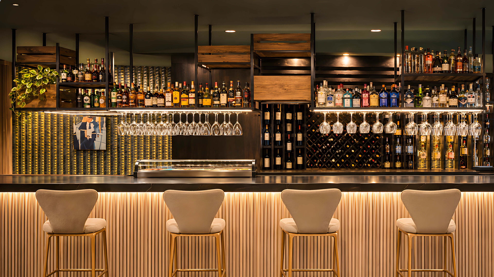
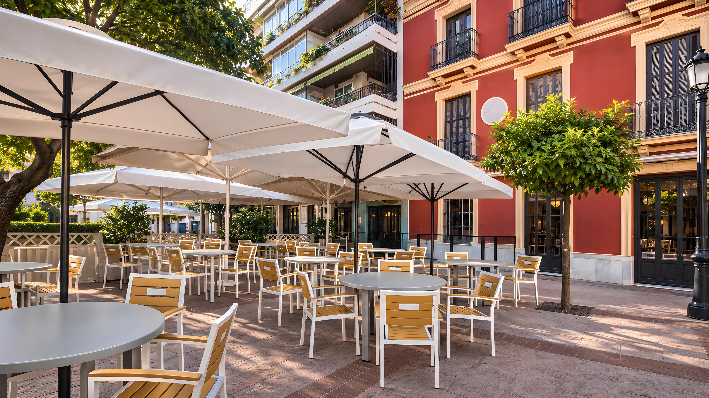

FUENGIROLA, MÁLAGACOCINA · TERRAZA · SOBREMESA36°32′ N / 4°37′ O

LA BARRA DE LA PLAZAUN ENCUENTRO A MEDIA LUZ
El sur.
A bocados.
Una mesa en Fuengirola. Un plato en el centro. Y ninguna prisa por marcharse.
Descubrir la cartaEn la mesa.
En buena compañía.
En buena compañía.
La vida en la plaza.
El placer en la mesa.

En el corazón de Fuengirola, frente a la iglesia del Rosario. Tapas para compartir, cocina de siempre y una terraza para dejar que el día siga su curso.
Un lugar para encontrarnosUn recorrido por La Plaza.
La terraza, la barra y la sobremesa. Un mismo lugar, a tu manera.
QUIENES YA HAN ESTADO
Quienes comparten
nuestra mesa.
Increíble atención de los camareros.
La comida estaba muy buena, todo llegó rápido.
Extractos de opiniones de Google recogidos en Restaurant Guru.
Leer las opinionesNOS VEMOS EN LA PLAZA
Hay una mesa
esperándote.
DÓNDE ESTAMOSPlaza de la Constitución, 9
29640 Fuengirola, Málaga
29640 Fuengirola, Málaga
En el casco histórico,
frente a la iglesia del Rosario.
HABLEMOS+34 952 463 359info@barlaplazafuengirola.es
Para reservas, horarios y cualquier detalle
que haga tu visita especial.